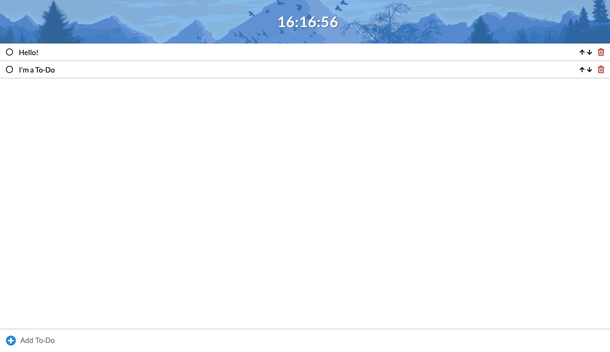

Projects
This page only lists some of my best projects. You can see all of my public projects on my Github.
To-Do WebApp
This To-Do was created to practice my vanilla JavaScript skills. It isn't perfect but it will soon be replaced by a better React To-Do Application.
Technologies Used
HTML5
CSS3
JavaScript
Notable Features
- Responsive Design
- Clock
- Done Button
- Moveable Tasks
- Delete Button
- Local Storage Usage
WeatherApp

The WeatherApp was created to practice API. It isn't my best or most polished app, but the goal was to implement as much information as possible.
Technologies Used
HTML5
CSS3
JavaScript
API
Notable Features
- API Usage
- Auto Updating Informations
- A Lot Of Features
- Mobile/Card Design
Rock, Paper, Scissors

The Rock, Paper, Scissors game is the first JS game I created. It's a good project for practicing logic and DOM Manipulation.
Technologies Used
HTML5
CSS3
JavaScript
Notable Features
- Arcade Design
- Independent Choices By The CPU
Tic-Tac-Toe
Another great project to practice logic and DOM Manipulation. The goal was to create a game which you can play against a friend.
Technologies Used
HTML5
CSS3
JavaScript
Notable Features
- Arcade Design
- Playable Against A Friend
- Winning Screen
jan-web.dev
I created this website for myself so I can show off my projects-list and you can learn more about me. I try to keep this website as simple and clean as possible.
Technologies Used
HTML5
CSS3
JavaScript
Sass/SCSS
Notable Features
- Responsive Design
- High Accessibility
- Great Maintainability (Sass 7-1 + BEM)
- Very High Google Lighthouse Rating